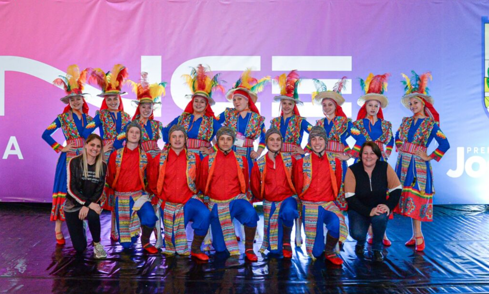
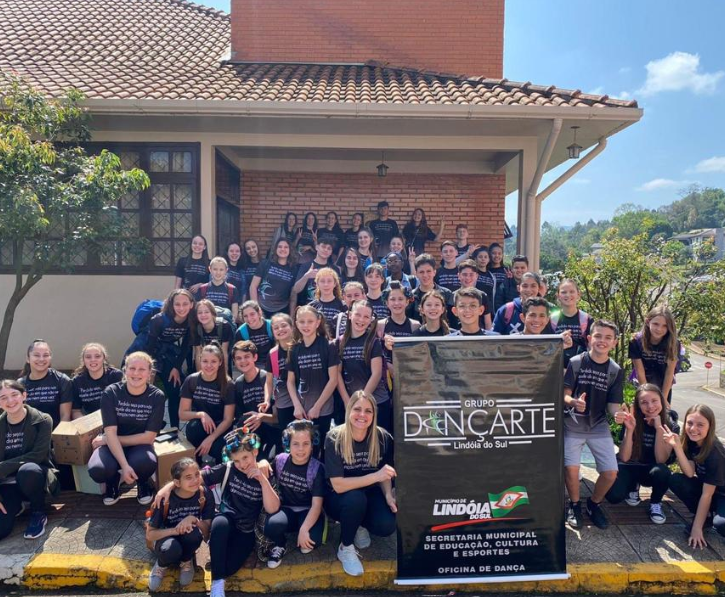
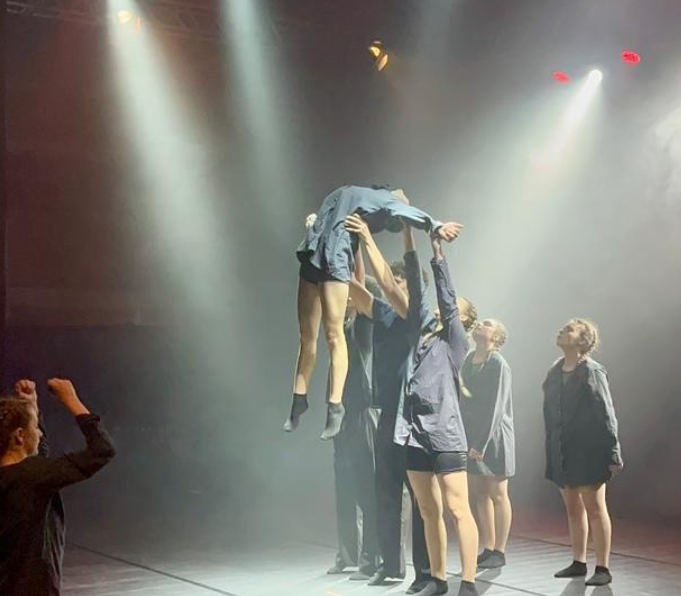
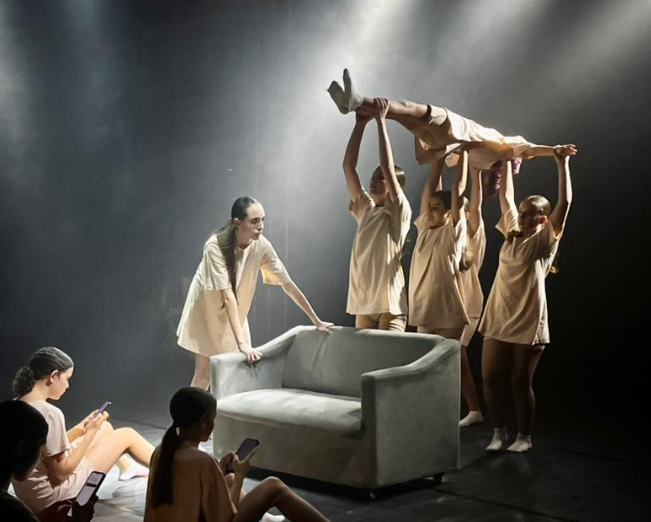

01

FOLCLÓRICA
Caracterizado pela técnica, precisão dos movimentos, animaçao e expreçoes.
EXPRECAO ARTE DANÇA RITIMO
Explore estilos e amplie seu conhecimento sobre a dança

SOBRE
A dança é uma forma de expressão que utiliza o corpo, o ritmo e o espaço para transmitir ideias, sentimentos e histórias.
Existem diversos estilos de dança, cada um com suas características, técnicas e formas próprias de expressão.
ESTILOS
Alguns estilos que fazem parte do universo da dança.

Caracterizado pela técnica, precisão dos movimentos, animaçao e expreçoes.

Um estilo marcado pela mudança anual sedo sempre problemas sociais e criticos.

Explora movimentos livres e diferentes possibilidades de expressão corporal.
BENEFÍCIOS
Contribui para uma rotina mais ativa.
Permite comunicar sentimentos através do corpo.
Estimula novas formas de criar e se expressar.
Pode aproximar pessoas através da música e do movimento.